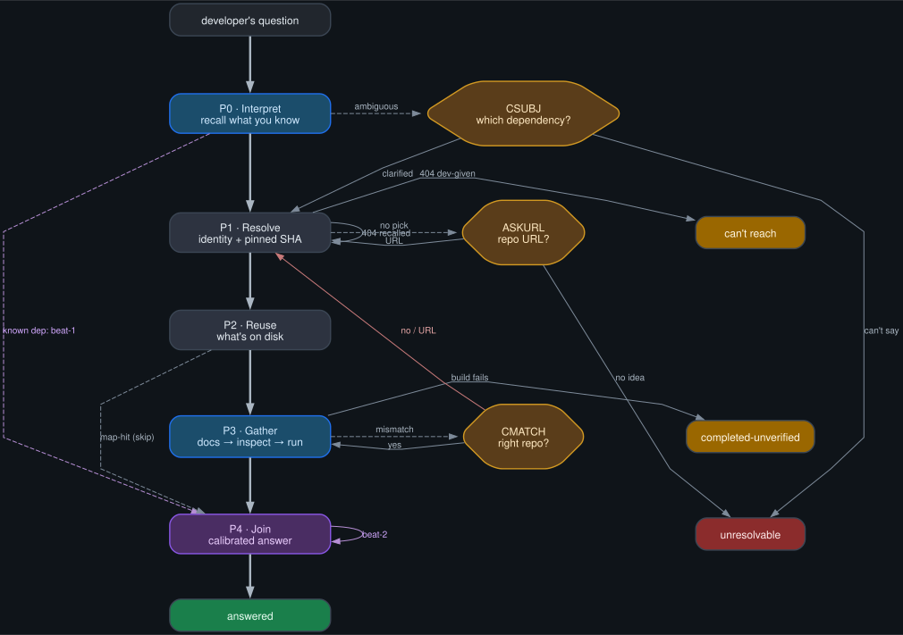

grounding-flow.md. Pipeline: the contract's edge list →
grounding-flow.dot (Graphviz source) → grounding-flow.svg →
this viewer. Do not hand-edit the picture to change the design — edit the contract /
.dot and re-run dot -Tsvg grounding-flow.dot -o grounding-flow.svg.
Switched off Mermaid: its dagre layout tangled the back-edges; Graphviz handles them.
Solid edges = control flow; dashed = an event/aside. The two-beat is the
purple P4 self-loop (beat-2 re-fire) plus the dashed P0→P4
(known-dep recall beat-1). Red edges are the back-edges into identity resolution. The
foreground/background line is wherever beat-1 first fires.